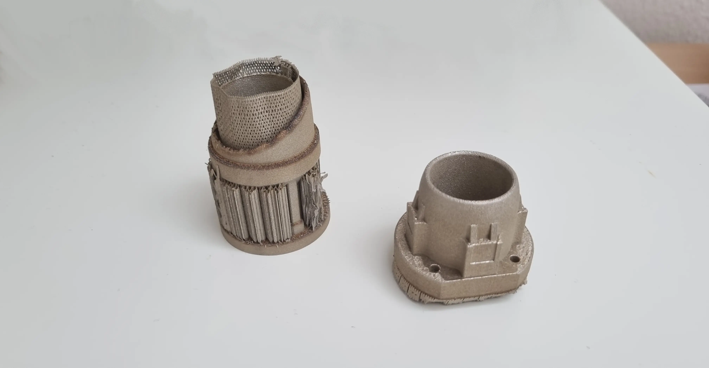
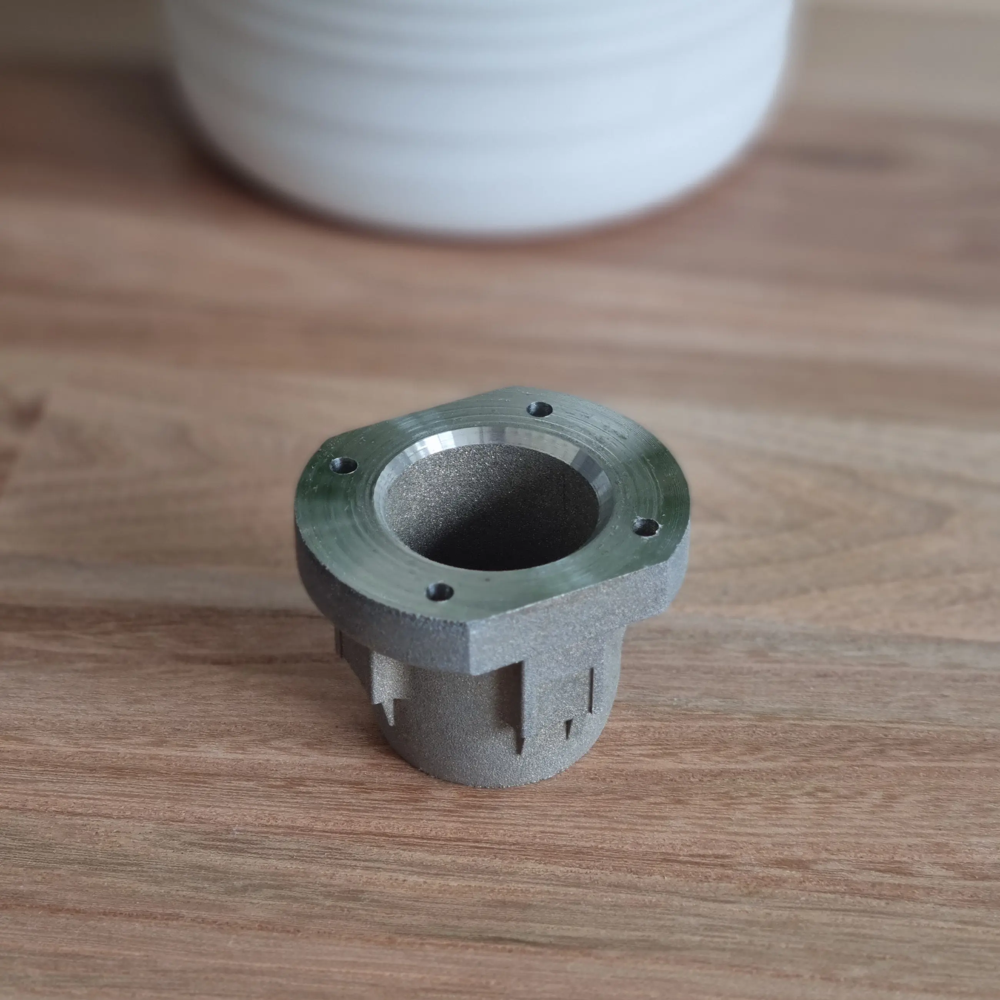
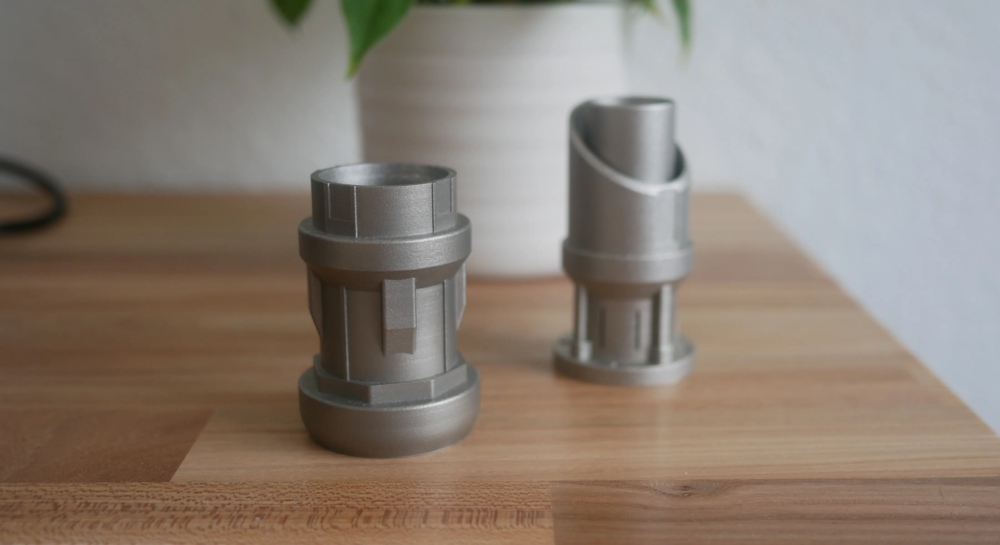
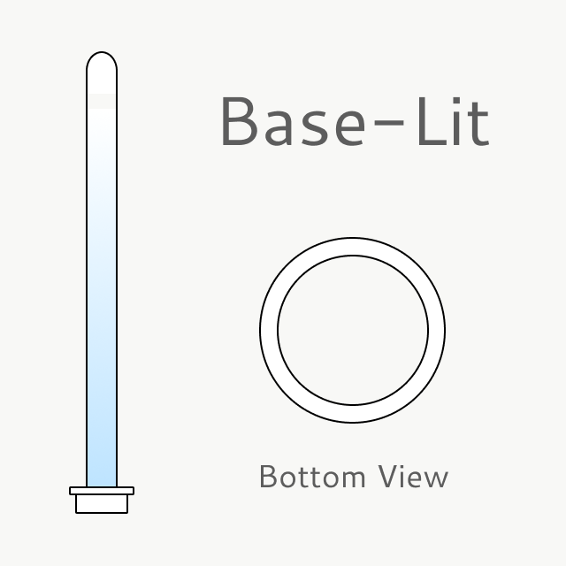
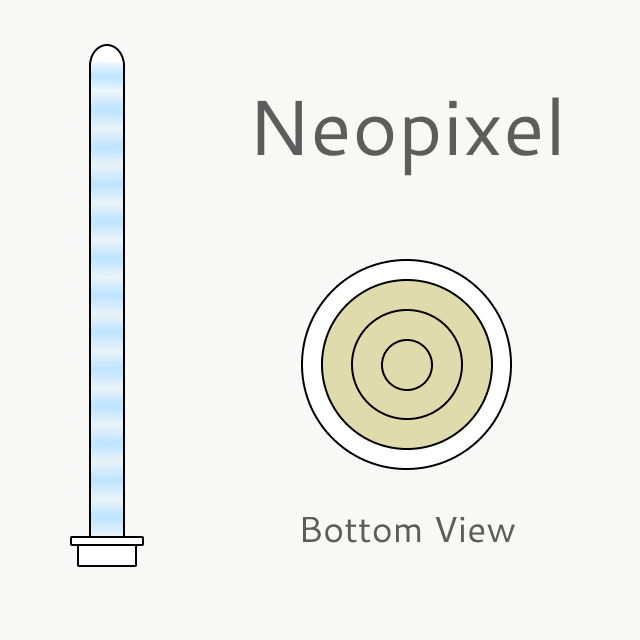
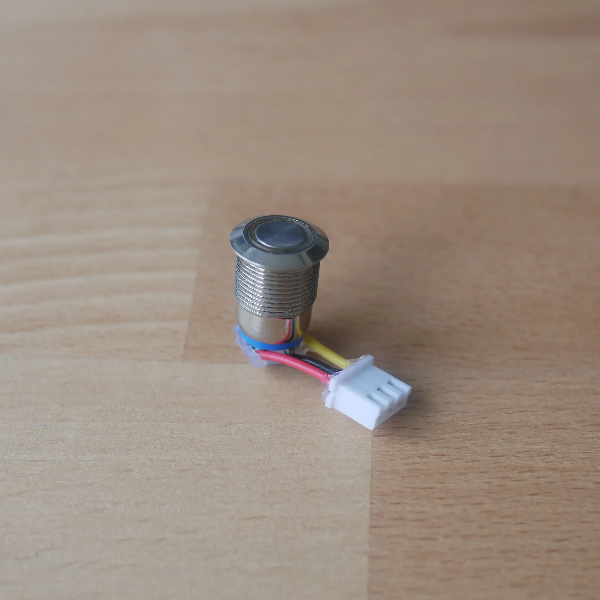

Lightsaber
Ever since I was a child, I have always wanted my own lightsaber, and while it is possible to buy one, designing and making my own has always seemed more interesting to me. I initially designed a lightsaber that consists of XXXX parts, with the intention of manufacturing them on a mill and lathe. Since I do not have either of these machines, the design stage was the furthest that the design ever got.

Several months later, a friend mentioned that a new Selective Laser Melting (SLM) 3D Printer was being set up at their work, and requires calibration. This meant that through my friend, I was able to 3D print parts out of metal. This lead me to design an entirely new lightsaber, in order to improve two things:
- Include Electronics and Blade: The previous design was meant to be a display piece. This means that there was no room for the electronics, and the emitter diameter was insuficcient for an actual lightsaber blade
- Reduce Part Count: The large amount of small parts were meant to simplify manufacturing, however with a 3D Printer, more complex designs are possible in a single part. Additionally this would reduce overhead and increase the chances that all parts are completed.
New Design
Due to not having the lightsaber core or the blade itself, determining the design requirements was somewhat of a challenge. Additionally, since the calibration process on the 3D Printer was to be finished soon, a serious time constraint was placed on the 3D modelling. This meant that while designing the parts, I was never 100% sure whether everything would fit, or even how to assemble the device.
Fortunately, many lightsaber parts are quite standardized so that manufacturers are able to sell to different companies. Notabely, the lightsaber blades tend to have a consistent diameter. After some research, I decided to base my design off of the parts sold by NSabers since I could ensure that both parts are available seperately. The blade comes in two sizes, with the 1 Inch (25.4mm) version chosen for the project. Unfortunately, the diameter of the electronics core was not listed which motivated me to oversize the grip by a few millimeters to ensure correct fitment. The electronics core turned out to also have a diameter of 25.4mm.
From these design criteria, I created and tweaked my design to something I was happy with, getting inspiration from existing models and concept art. The final hilt design consists of 5 seperate parts:
- Grip: A simple aluminium tube with a diameter of 35mm and a wall thickness of 3mm. This reduces cost and would be unecessary to 3D print.
- Emitter: This is the top-most part of the hilt, where the blade ultimately comes out. Attached to the joiner with screws
- Joiner: Second component of the top piece. Ideally this would have been a single part, but it was split in so that no large overhangs would have to be printed. Small slits were added to allow the light to pass through.
- Pommel: The lowest part of the hilt, into which the grip simply slides in and can then be attached with screws at 4 specified points.
- Button Adapter: This part was designed only after the electronics were finished. Holds the button to the grip.
Throughout the entire design, I tried to stick as close to SLM Design Guidelines in order to reduce the amount of support material and ensure printability. Finally, I was able to export the design as seperate .obj files and send them off to be printed.
Printed Parts
Upon receiving two of the three main components, it was clear that the machine parameters had not been completely dialed in, with consistent burn patterns, and fused support structures. Fortunately, the emitter was quite good due to not requiring any supports at all. The joiner however was more problematic due to the complex geometry. Initally I tried to manually remove the supports and clean up the areas, but since these pieces were printed out of steel, this proved to be a difficult task.


While the joiner proved impossible to clean up, the emitter section was sucessfully finished through a lot of hand filing and ultimately a milling pass after many pained hours trying to remove millimeters of material. The final emitter part, while not perfect looks great and is dimensionally accurate.
With the Joiner not being usable and the pommel not printed due to time constraints, I had to find a way to manufacture the last two parts. Luckily another friend offered to print them, allowing me to finishe the project. Since this machine was successfully calibrated, the last two prints went perfectly, showing that the design considerations led to an easily printable component. Additionally, the pommel came out excellent as well and unlike the other two parts, it wasn't printed out of steel, but rather titanium. This part looks and feels amazing, but due to the different metal, it has a slightly different color (As do the two steel parts). This is something that may be important to consider for any future projects or second attempts.

Electronics
Once all components were complete and I was sure that it would be possible to complete the project, I ordered a used Lightsaber which I could then gut for the electronics core and blade. When choosing these two, it is important to understand that there are two basic principles on which these systems work:
- Baselit: This design is basically an LED flashlight in a hilt with a diffused blade responsible for spreading out light. The light is emitted at the base and bounces around in the blade to somewhat evenly light it up. This means the brightness of the blade is greatest at the bottom, with a strong and unrealistic gradient. These look worse and are usually dimmer, but they are cheaper and better for duelling.
- Neosaber: The bottom of the blade has electric contacts that interact with pins in the electronic core. This provides power and data signals to the LED strip which is run up and down the polycarbonate blade. With RGB LED's along the entire length of the blade, it makes for a more even light distribution, brighter overall emission and allows for startup and wind-down effects by cycling individual LED's. The electronics inside of the blade are less durable however, and not as good for dueling.


Since I didn't plan on duelling and wanted the best looking lightsaber, I bought a lightsaber with a neopixel blade, and subsequently removed the accompanying electronics core. This saved money compared to buying the individual parts new. The electronics worked perfectly, and with a length of 149mm, packaging would not be an issue. While possible to use the electronics as is, there was a single issue that bugged me. Likely due to mass manufacturing requirements, the button to activate the saber was simply slotted upward into a hole in the purchased grip. This is done by tightening a screw which would then raise a pcb with the button attached.

Although this functionally works without issues, I was unhappy with the gap inside of the grip that would be required for the button to go through. After all of this effort, I did not want the single interaction method to look or feel unprofessional, so I had to come up with a way to insert the button from the outside and connect it to the electronics core on the inside. I did this by unsoldering the PCB and soldering and crimping on a JST connector to the button as well as to the microcontroller within the core. This would then allow me to insert the electronics core, attach the JST connectors and slide the button in from the outside, attaching it directly to the grip.
Assembly
In order to assemble the lightsaber, the aluminium tube which acts as the grip had to be sanded down significantly. This is because the 3D printed parts were designed to be oversized, ensuring that nothing would be loose with the knowledge that I can always remove material. In practice, this took a lot of work, and undersizing the comonents and then adding a liner might be a more effective solution. After cutting the grip to lenght and sanding it for a friction fit, all of the metal components fit together. Despite all of this, two parts are stilling missing for the assembly:
- Electronics Sleeve: Since the Electronics core had a diameter of 25.4mm and the aluminium tube an inner diameter of 29mm, I had to design and 3D print a sleeve that goes around the electronics to ensure a friction fit. All cutouts and hole locations are preserved for assembly
- Button Adapter: Because the button is now mounted on the outside, and because the tube is not flat, I designed a small adapter plate that would hold the button flush, perfectly follow the contour of the grip, and provide holes for fixing the adapter on the grip. This was then sent to be 3D printed out of steel by JLCPCB.
Finally all parts are complete and ready for assembly. Holes are drilled through the 3D printed components as well as the grip. The holes inside of the tube are tapped with M3 threads. Ho